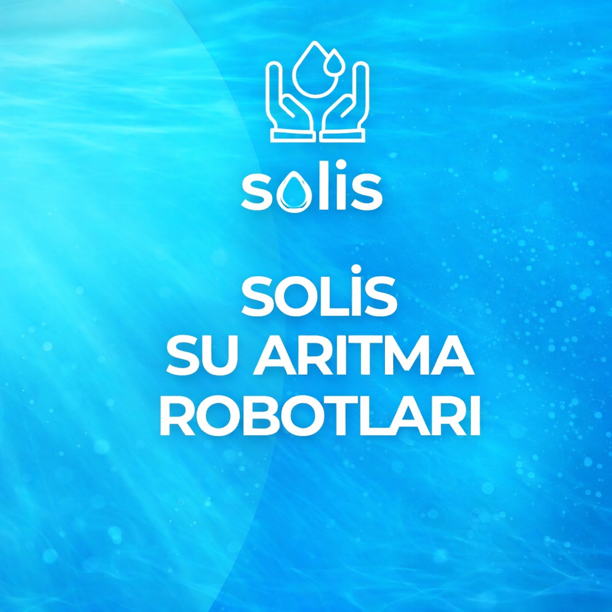
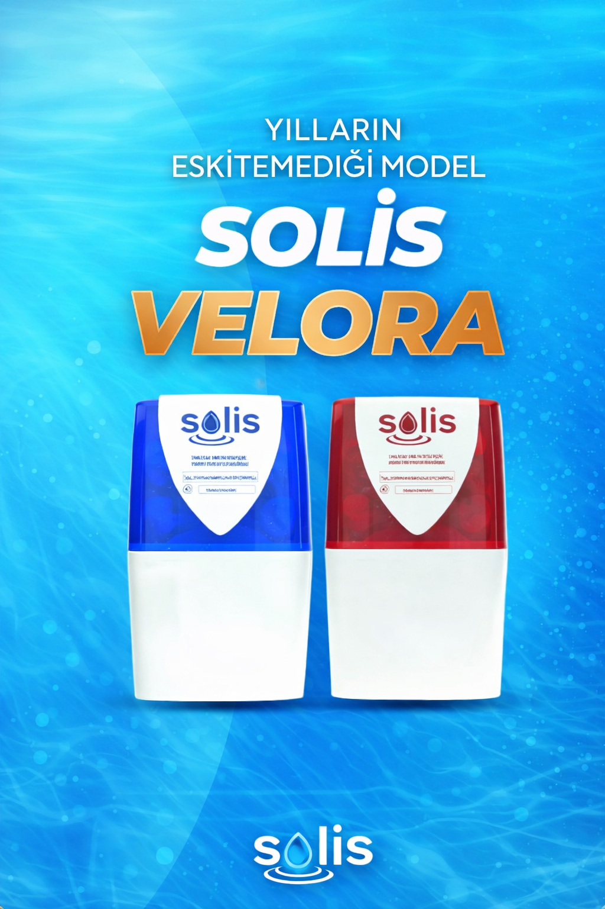
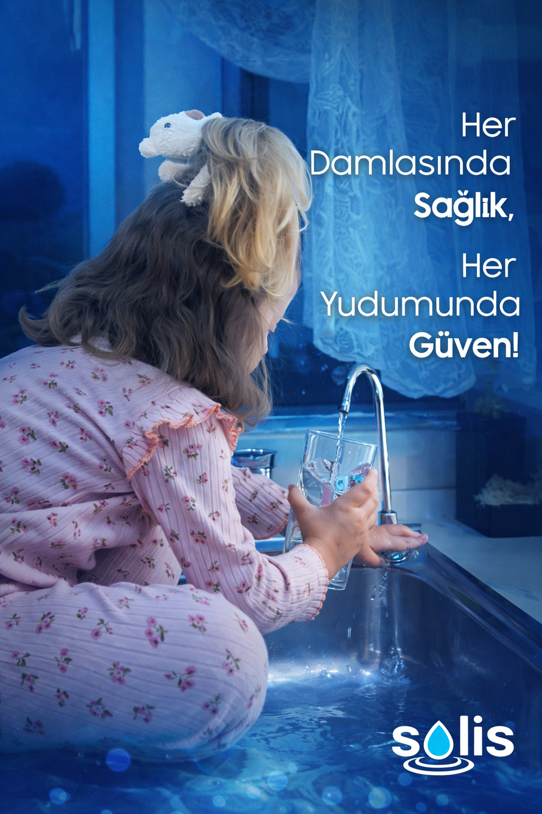

Solis Su Arıtma teknolojileri ile sağlıklı içme suyuna hemen ulaşın.
Mutlu Müşteri
İlde Hizmet
Müşteri Memnuniyeti
Teknik Destek
Gelişmiş filtreleme sistemi ile suyunuzdaki zararlı maddeleri etkili şekilde arındırır.
Arıtma sürecinde suyun doğal mineral yapısı korunarak sağlıklı içme suyu elde edilir.
Gelişmiş sistem yapısı sayesinde cihazlarımız son derece sessiz çalışır.
Türkiye genelinde uzman ekiplerimiz tarafından ücretsiz kurulum hizmeti sunulur.
Solis Su Arıtma olarak vizyonumuz; ileri teknoloji filtrasyon sistemlerimizle Türkiye’nin her noktasına en saf, en güvenilir ve en sağlıklı suyu ulaştırarak toplumun yaşam kalitesini kalıcı olarak artırmaktır. Sadece bugünü değil, yarınları da düşünerek, temiz su erişimini herkes için ulaşılabilir kılmayı ve çevreye duyarlı çözümlerimizle doğayı korumayı hedefliyoruz. Sürdürülebilir bir gelecek inşa etme yolunda, tek kullanımlık plastik tüketimini ve karbon ayak izini minimuma indiren yenilikçi projelere imza atarak sektörde öncü bir marka olmayı amaçlıyoruz. Solis Su Arıtma çatısı altında geliştirdiğimiz her bir çözümle, doğaya saygılı bir yaşam kültürünün yaygınlaşmasına liderlik etmek ve su teknolojileri denildiğinde akla gelen ilk güven kapısı olmak en büyük hedefimizdir.
Solis Su Arıtma olarak misyonumuz, en yüksek kalite standartlarına sahip yeni nesil cihazlarımızla musluk suyunuzu tüm zararlı bileşenlerden arındırarak, aileniz ve sevdikleriniz için en doğal haliyle sunmaktır. Sağlıklı suya erişimin her bireyin hakkı olduğu inancıyla, gelişmiş sistemlerimizi ulaşılabilir kılıyor ve evlerinizdeki suyun kalitesini bir üst seviyeye taşıyoruz. Koşulsuz müşteri memnuniyeti ilkesini işimizin kalbine koyarak, Türkiye'nin 81 ilinde profesyonel kurulum ve kesintisiz teknik destek hizmeti sağlıyoruz. Solis Su Arıtma ailesi olarak, sadece cihaz satışı yapmıyor; satış sonrası sunduğumuz yaygın servis ağımızla güvene dayalı uzun ömürlü dostluklar kuruyoruz. Her bir kullanıcımızın mutfağında sağlıklı, taze ve güvenilir suyun eksik olmaması için durmaksızın çalışmaya devam ediyoruz.

Cihazlarımız, musluğunuzdan gelen suyu doğadaki gibi temiz ve taze hale getirmek için özel bir arındırma sistemi kullanır. Su, cihazın içindeki farklı katmanlardan geçerken çamur, pas, klor ve kireç gibi suyun tadını ve kalitesini bozan tüm maddelerden adım adım temizlenir. Bu süreçte sadece zararlı maddeler ayrıştırılırken, suyun içindeki faydalı minerallere dokunulmaz. Sonuç olarak mutfağınızda; kokusu olmayan, yumuşak içimli ve hem içmek hem de yemeklerinizde güvenle kullanabileceğiniz cam gibi berrak bir su hazır hale getirilir. Kısacası sistemimiz, şehir suyunu sizin için en sağlıklı kaynak suyu kalitesine dönüştürür

Cihazınızın her zaman ilk günkü tazeliğinde su üretebilmesi için filtre değişimleri kritik bir öneme sahiptir. Standart bir kullanımda filtre değişim süreleri genellikle 6 ile 12 ay arasında değişmektedir. Ancak bu süre, mutfağınızdaki su kullanım yoğunluğuna ve bölgenizdeki şebeke suyunun ne kadar kireçli veya tortulu olduğuna göre farklılık gösterebilir. Filtreler zamanla sudaki zararlı maddeleri tuttukları için dolar ve temizleme kapasiteleri azalır. Suyunuzun tadında bir değişim hissetmeseniz bile, sağlığınızı korumak ve cihazınızın ömrünü uzatmak için periyodik bakımları aksatmamak gerekir. Teknik ekibimiz, değişim zamanı geldiğinde sizi bilgilendirerek sisteminizin her zaman en yüksek performansta çalışmasını sağlar.

Kurulum sürecimiz, günlük yaşantınızı aksatmadan son derece hızlı ve profesyonel bir şekilde gerçekleştirilir. Satın alma işleminin ardından, size en uygun gün ve saat için hızlıca bir randevu planlıyoruz. Belirlenen saatte adresinize gelen uzman teknisyenlerimiz, cihazı mutfak tezgahınızın altına, alanınızı en verimli kullanacak şekilde titizlikle monte eder. Kurulum sırasında mutfağınızda herhangi bir kırma veya dökme işlemi yapılmaz; sistem mevcut tesisatınıza güvenli bir şekilde entegre edilir. Yaklaşık 15-30 dakika süren bu işlemin ardından, cihazın kullanımı ve dikkat edilmesi gereken küçük noktalar hakkında size pratik bilgiler verilir. Süreç sonunda, musluğunuzdan akan sağlıklı suyun tadına bakmanızla birlikte kurulumu tamamlamış oluyoruz.
Evet, cihazlarımız zararlı kimyasalları ve mikroorganizmaları filtreleyerek sağlıklı içime uygun su sağlar. Mineraller ise en doğal formunda korunur.
Tüm cihazlarımız üretim ve montaj hatalarına karşı 2 yıl garanti kapsamındadır. Herhangi bir arıza durumunda teknik desteğimizden yararlanabilirsiniz.
Gerçek kullanıcı deneyimlerinden bazıları
“Kurulum için gelen ekip gerçekten çok ilgiliydi. Daha önce damacana kullanıyorduk, şimdi hem daha rahat hem de suyun tadı çok daha iyi.”
— Ayşe K. / İstanbul“Açıkçası başta çok emin değildim ama kullandıktan sonra farkı anladık. Çay ve kahvenin tadı bile değişti.”
— Mehmet T. / Ankara“Filtre değişimi ve servis konusunda da yardımcı oluyorlar. Kurulumdan sonra da ilgilenmeleri hoşuma gitti.”
— Ahmet Y. / İzmir“Damacana taşıma derdi tamamen bitti. Özellikle çocuklu aileler için gerçekten çok rahat.”
— Elif D. / Bursa“Fiyat performans olarak gayet iyi. Kurulum yaklaşık 20 dakika sürdü, çok pratik bir süreçti.”
— Murat G. / Antalya“Suyun tadı gerçekten fark ediyor. Misafirler geldiğinde bile soruyorlar hangi cihazı kullandığımızı.”
— Zeynep A. / İstanbul“Randevu aldık ve söyledikleri saatte geldiler. Kurulum hızlı oldu ve cihazı kullanmayı detaylı anlattılar.”
— Hasan Ç. / Konya“Daha önce başka marka kullanıyorduk. Solis'e geçtikten sonra suyun tadı gerçekten daha iyi geldi.”
—